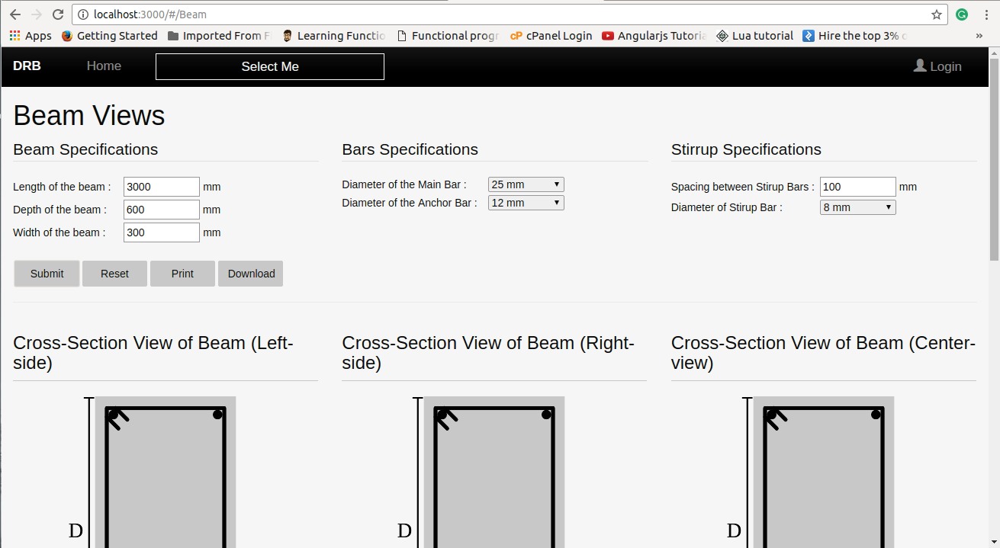

drb
Design and Reinforcement of Beam
It is an Web application, which gives certain veiws of the desgins in 2-Dimensions.
User Interface
- Dropdowns
- Select options
- Canvas
Dimensions Required
- Length of the beam
- Depth of the beam
- Width of the beam
- Diameter of the Main Bar
- Diameter of the Anchor Bar
- Spacing between Stirup Bars
- Diameter of Stirup Bar
After filling all dimensions

We can download the views in the pdf file format on clicking download button.
Languages Used
- HTML/CSS-3
- JavaScript
- Server-side engine - Node.js
- Database - MongoDB
Libraries used
- Bootstrap - for makiing responsive website.
- jspdf.js - for generating pdf on client-side.
Frameworks used
- Angular.js - For frontend, which is been used for contolling, veiwing of the designs. Route.js is used for routing purpose and making application SPA i.e Single Page Application.
- Express.js - This is used as a middleware of node.js